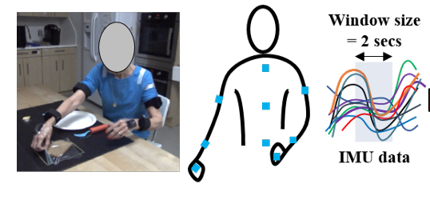

StrokeRehab contains wearable-sensor data and video data collected during rehabilitation activities
Dataset
Automatic assessment of impairment and disease severity is a key challenge in data-driven medicine. We propose a novel framework to address this challenge, which leverages AI models trained exclusively on healthy individuals. The COnfidence-Based chaRacterization of Anomalies (COBRA) score exploits the decrease in confidence of these models when presented with impaired or diseased patients to quantify their deviation from the healthy population.
We applied the COBRA score to address a key limitation of current clinical evaluation of upper-body impairment in stroke patients, as well as to quantify severity of knee osteoarthritis from magnetic-resonance imaging scans.
Raw data and our AI model outputs for two slinical applications are shared for research use. For the quantification of stroke-related motor impairment, we leverage the StrokeRehab dataset. For the quantification of knee osteoarthritis severity, we leverage the OAI-ZIB dataset.
StrokeRehab
StrokeRehab is a large-scale, multimodal dataset that serves as a new benchmark for recognizing elemental short-duration actions at high temporal resolution. Designed to address the challenges of automatic action identification from video and kinematic data, StrokeRehab is particularly tailored for applications requiring detailed motion analysis, such as arm rehabilitation post-stroke.
It consists of high-quality inertial measurement unit sensor and video data of 51 stroke-impaired patients and 29 healthy subjects performing activities of daily living like feeding, brushing teeth, etc. Because it contains data from both healthy and impaired individuals, StrokeRehab can be used to study the influence of distribution shift in action-recognition tasks.
IMU Data : Nine IMUs are attached to the upper body, specifically the cervical vertebra C7, the thoracic vertebra T12, the pelvis, and both arms, forearms, and hands which capture 3D linear accelerations and angular velocities at 100 Hz. These IMUs captured 76-dimensional kinematic features of 3D linear accelerations, 3D quaternions, and joint angles from the upper body. Angular velocities are converted to sensor-centric unit quaternions, representing the rotation of each sensor on its own axes, with coordinate transformation matrices
Video Data : Video data were synchronously captured using two high definition cameras (1088 x 704, 60 frames per second or 100 frames per second; Ninox, Noraxon) placed orthogonally < 2 m from the subject. The video below shows an example capture of dataset.
Data Access: We have released the kinectic (IMU) dataset and video features on the simTK platform. One can freely create an account and access the dataset. We also released model output for the healthy-trained AI models via Google Drive (IMU output, Video output).
OAI-ZIB
OAI-ZIB dataset is a collection of MRI (Magnetic Resonance Imaging) data obtained from the Osteoarthritis Initiative (OAI) study, along with manual segmentations of knee structures performed by experts. The MRI scans in the OAI-ZIB dataset offer detailed information about knee anatomy and pathology. These high-quality images enable precise analysis of bone, cartilage, and other soft tissue structures affected by OA.

It provides 3D MRI scans of 101 healthy right knees and 378 right knees affected by knee osteoarthritis, a long-term degenerative joint condition. Each knee is labeled with the corresponding Kellgren-Lawrence (KL) grade. The KL grade quantifies OA severity on a scale from 0 (healthy) to 4 (severe), as illustrated in the figure. Each voxel in the MRI scans is labeled to indicate the corresponding tissue (tibia bone, tibia cartilage, femur bone, femur cartilage or background).
Data Access: The MRI raw data and maual segmentations can be downloaded via ZIB platform. One can freely create an account and fowwlow instructions to apply for dataset access. We also released model weight for the healthy-trained AI models via Google Drive (model weight). In addition, we provided 5 sample outputs.